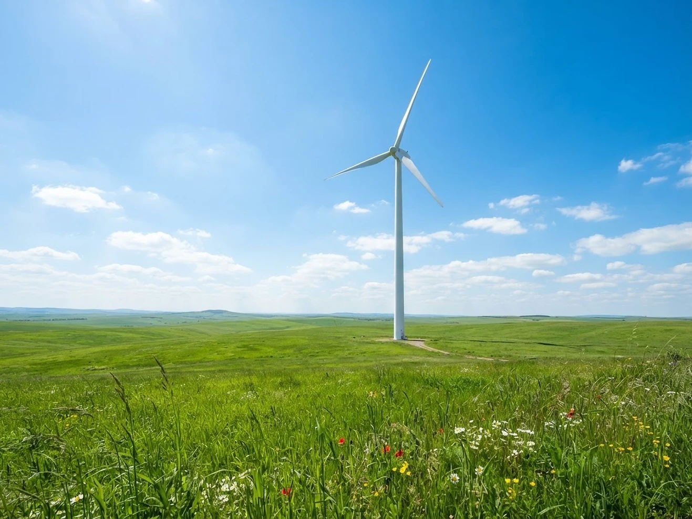
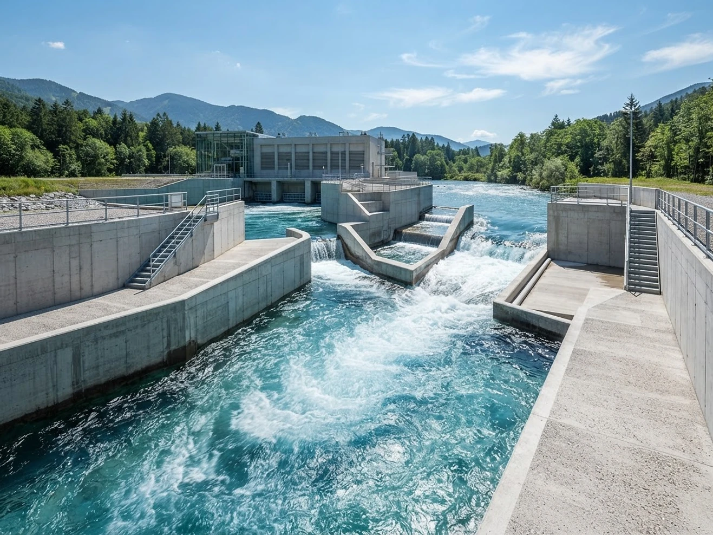
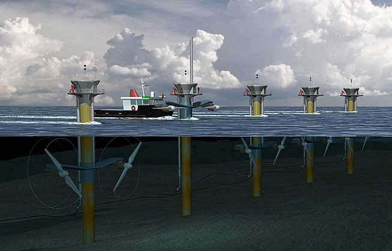
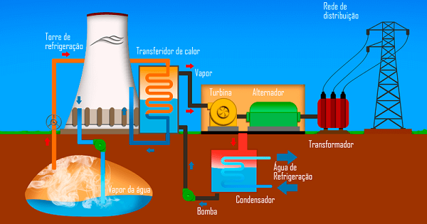

Captada por painéis fotovoltaicos (eletricidade) ou coletores
térmicos (aquecimento de água). É uma das fontes que mais
cresce devido à facilidade de instalação em telhados
(geração distribuída) ou em grandes usinas de solo e flutuantes.
Vantagens: Abundante e inesgotável em quase todo
o planeta, tem custo de manutenção muito baixo e pode ser instalada
desde grandes usinas até no telhado de casas e comércios (geração
distribuída), reduzindo perdas na transmissão.
Curiosidades: Painéis solares também funcionam em
dias nublados, pois captam a radiação ultravioleta e não a
temperatura do sol. Além disso, a Terra recebe em apenas uma hora
mais energia do Sol do que a humanidade consome em um ano inteiro.
As 6 Energias Renováveis Mais Conhecidas
1 - Energia Solar
2 - Energia Eólica

Gerada pelo vento que gira as pás de aerogeradores. Pode ser
instalada em terra (onshore) ou no mar (offshore), onde os
ventos são mais fortes e constantes.
Vantagens: Não emite gases poluentes
durante a operação, ocupa pouco espaço no solo (permitindo
coexistir com agricultura e pecuária) e é altamente rentável em
regiões com ventos constantes, como o Nordeste brasileiro.
Curiosidades: As pás de uma turbina eólica
gigante podem ultrapassar 100 metros de comprimento — maior
do que o comprimento de um campo de futebol oficial. No
oceano (eólica offshore), os ventos são tão mais fortes que
uma única volta das pás de uma turbina de grande porte
consegue abastecer uma casa por dias.
3 - Energia Hidrelétrica
Produzida pelo movimento da água em rios e barragens.
É a principal base da matriz elétrica brasileira, oferecendo
estabilidade, embora exija cuidados com os impactos
socioambientais na construção dos reservatórios.
Vantagens: Fonte limpa renovável de altíssima
capacidade de geração contínua (massa de manobra), com reservatórios
que funcionam como "baterias naturais", permitindo controlar a
quantidade de água liberada conforme a demanda por eletricidade.
Curiosidades: A Usina de Itaipu, na fronteira
entre o Brasil e o Paraguai, já produziu historicamente mais
energia acumulada do que qualquer outra usina do planeta, superando
até mesmo a gigantesca usina de Três Gargantas, na China.

4 - Biomassa
Gerada a partir de matéria orgânica (como bagaço de cana,
resíduos agrícolas e lenha) e biocombustíveis
(como etanol e biodíesel). No Brasil, o biogás gerado a
partir do lixo ou resíduos da agropecuária também ganha força.
Vantagens: Aproveita resíduos orgânicos e agrícolas
que seriam descartados no meio ambiente (como bagaço de cana, casca
de arroz e esterco) para gerar eletricidade ou combustíveis limpos
(etanol e biodiesel), promovendo a economia circular.
Curiosidades: O Brasil é referência global no setor
graças ao Proálcool e ao uso do etanol em carros flex. Além disso,
o biogás retirado do lixo em aterros sanitários pode ser purificado
até virar biometano, um combustível idêntico ao gás natural, mas 100% renovável.
5 - Energia Maremotriz
A energia das marés, também chamada de energia maremotriz,
é captada por meio do aproveitamento da energia resultante
do desnível das marés. Para que essa energia seja se torne
eletricidade é necessária a construção de barragens, eclusas
(permitindo a entrada e saída de água) e unidades geradoras de energia.
Vantagens: Previsibilidade total. Diferente do
sol (que depende do dia) e do vento (que varia), as marés são
perfeitamente previsíveis por causa da atração gravitacional da
Lua e do Sol.
Curiosidades: Embora a energia das ondas e marés
seja colossal, o maior desafio tecnológico dessa fonte é fazer
os equipamentos resistirem ao ambiente marinho, que causa corrosão
intensa por causa do sal e do impacto de tempestades no oceano.

6 - Energia Geotérmica

A energia geotérmica é obtida a partir do calor armazenado no interior da Terra. Esse calor é extraído por meio de poços que alcançam reservatórios de água quente ou vapor, que é utilizado para gerar eletricidade.
Vantagens: Funciona 24 horas por dia, 7 dias por semana,
independentemente do clima, estações do ano ou hora do dia,
ocupando uma área de terreno muito pequena na superfície em
comparação à sua produção.
Curiosidades: A Islândia gera quase toda a sua eletricidade
e aquecimento doméstico a partir do calor geotérmico da Terra. Em algumas
cidades do país, a água quente gerada pela própria terra é canalizada
para derreter a neve e o gelo nas calçadas durante o inverno.